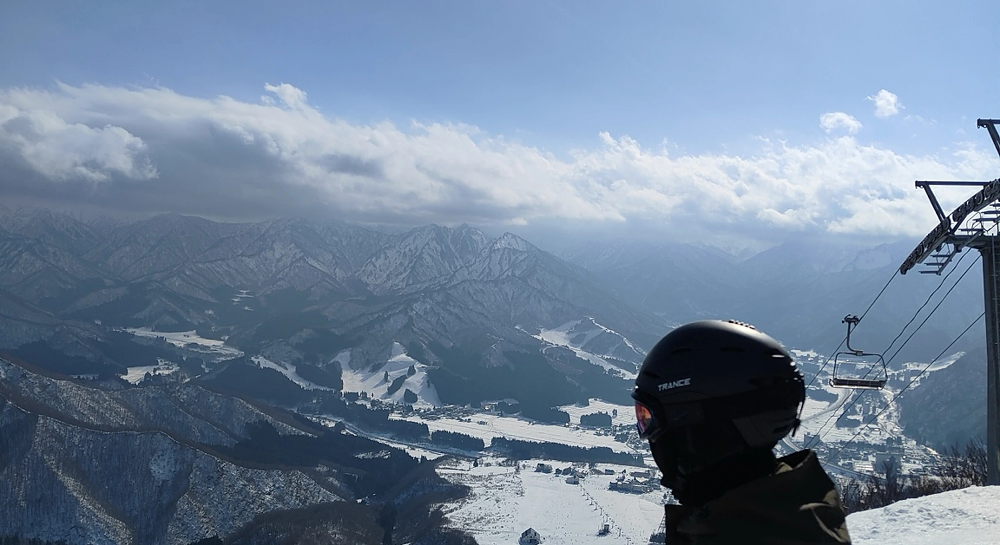
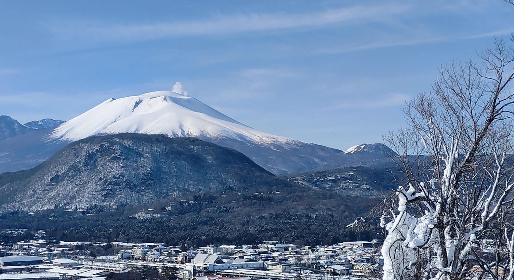

SNOW AREAS
雪胖目前主要提供越後湯澤與輕井澤兩個區域的滑雪服務
YUZAWA
越後湯澤
主推中里與岩原 湯澤區其他雪場原則上可依日期 雪況與需求安排
主推雪場中里 岩原
其他湯澤雪場預約時提出需求
課程初雪萌新小團班 你好同學班 獨自升級專屬包班 雙教練專屬包班
交通費部分雪場依情況另計

KARUIZAWA
輕井澤
適合新手 家庭與想把滑雪排進旅程的行程
初雪萌新小團班半日 NT$3,000／人 全日 NT$4,500／人
你好同學班半日 NT$10,000／組 全日 NT$15,000／組
獨自升級專屬包班1–3 人 半日 NT$12,000 全日 NT$17,000
雙教練專屬包班5 人以上可選擇升級
板種雙板 Ski 單板 Snowboard
安排依日期與教練調度確認
